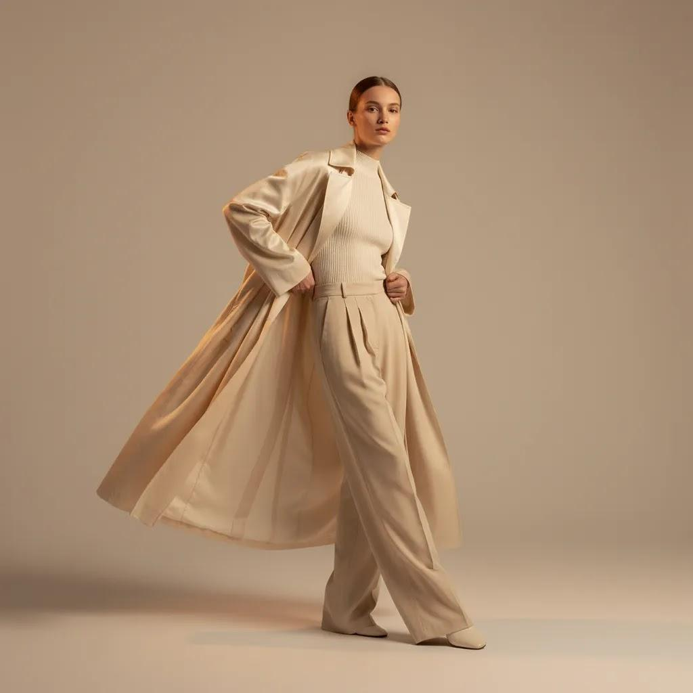

Runway Fashion
Runway shows allow designers to present collections and introduce new fashion ideas.
The Fashion Frame
Models, fashion photography, runway shows and the stories behind the industry.
The Fashion Frame is a fashion information website that introduces international models, modeling agencies, fashion editorials and major fashion events.

Runway shows allow designers to present collections and introduce new fashion ideas.
Fashion photography communicates creative ideas through models, clothing, locations and styling.
Models work with agencies, designers, photographers and fashion brands in different areas of the industry.
Have a question or suggestion about our fashion features?